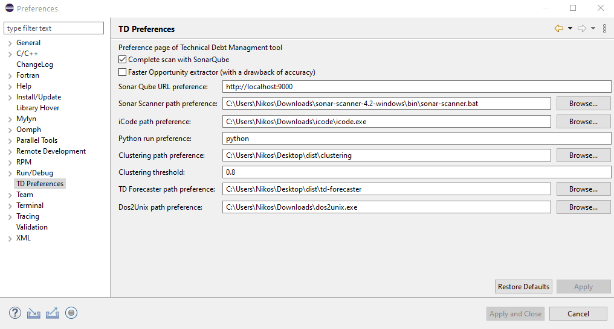

Eclipse IDE can be customized through the Preference window and it is possible to create a plugin that it can be customized in the same way. By navigating through the menu “Window” and then selecting “Preferences” one can see the new TD Preferences page (see Figure).
The analysis of a project consists of two parts: 1) the calculation of the design smells (the metrics), and 2) the identification of code smells (the rule violations). As the identification of rule violations is possible with the help of SonarQube, we created the possibility of analysis only for design smells. In order to use SonarQube, some additional information should be provided, that’s why the default option is not a complete scan. From that page, the user can select if he wants to use SonarQube or not, and provide the required information of SonarQube URL, the SonarScanner path and iCode path. This customization should be the first thing he/she has to do, in order to access the full potential of the TD management, with the use of a complete scan.
Finally, from the TD Preferences, the user can select the way in which the tool is going to find the possible opportunities for refactorings. By activating the “Faster Opportunity extractor” the tool is going to use the modified version of SEMI but at a risk of losing some extract method suggestions. On the other hand, by not activating that option the initial algorithm of SEMI is going to be used with better results but with the need for more execution time.
